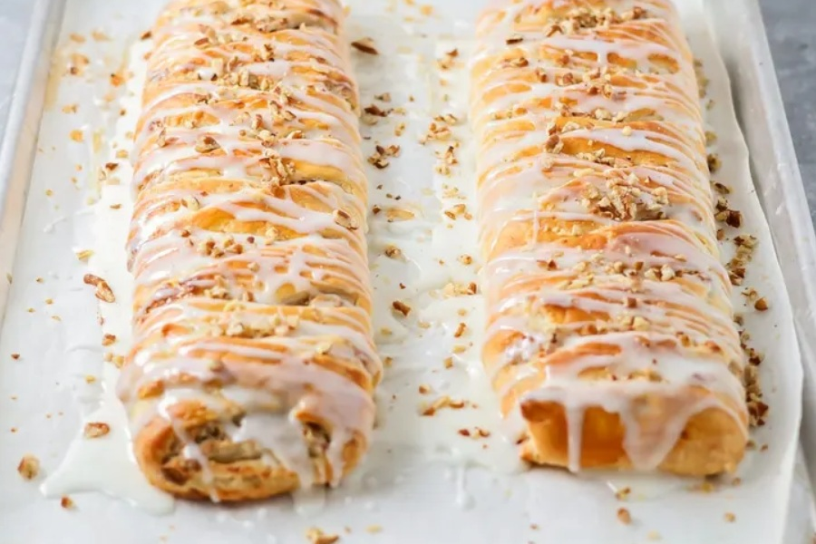

Kringle is a popular Danish pastry often filled with fruits,
nuts, jams, or chocolate. In the United States, Kringle took
root in a city just south of Milwaukee: Racine.
Prep Time: 45mins
Cook Time: 30mins
Additional Time: 8hrs 30mins
Total Time: 9hrs 45mins
Servings: 12

Ingredients
For the crust: all-purpose flour, salt, cold butter, and sour cream.
For the filling: an egg, cream cheese, brown sugar, ground cinnamon, and chopped walnuts.
For the glaze: confectioners’ sugar and water.
Steps
Classic Kringle are shaped into an oval. However, this recipe yields two rectangle-shaped Kringle, which should fit on a single baking sheet. Eat one, share one, or devour them both.
First, make the crust. It’s not hard, sort of like making pie crust. Using a knife or a pastry blender, “cut” the cold butter into the flour until the mixture resembles coarse crumbs, about the size of peas.
Danish kringle ingredients mixed together in a clear bowl.
Sprinkle on the ice water and gently stir the water into the dough with a fork. You should have a soft dough.
Danish kringle dough rolled into a ball in a clear bowl.
Next, cut the dough into two equal pieces. Take each piece and form it by hand into a 3-inch by 12-inch strip.
Place the two strips of dough side-by-side on a parchment-lined baking sheet. Give them some space, though, because they get flattened and will spread out.
Then press each strip flat, using the back of a measuring cup or a small rolling pin. Flatten the dough until each piece is about 1/4″ thick.
Danish kringle dough on a baking pan.
Meanwhile, to make the “filling” layer, combine the butter and water in a saucepan and bring to a boil over medium-high heat. Once the mixture boils, remove from the heat and immediately stir in the flour. Whisk until smooth.
Next, add the eggs one at a time, whisking in between each egg.
Danish kringle filling on a silver sauce pan.
Finally, add the almond extract.
Next, spread or pipe the sweet almond dough on top of each piece of dough. (This “filling” will bake up gorgeously golden brown and puffy on top of the crust.)
Precooked danish kringle on a baking pan.
Bake the Kringle at 350 degrees for 50 to 60 minutes. Remove from the oven and allow the Kringle to cool for at least one hour before frosting.
Danish kringle on a baking pan.
Making the Kringle icing:
We’re almost there! This icing is amazing drizzled over the baked Kringle.
Top with some toasted, slivered almonds, and you got yourself one heck of a dessert!
Danish kringle filling ingredients in various bowls.
In a small bowl, mix together the powdered sugar, butter, almond extract, and most (but not all) of the milk. (Hold a tablespoon of the milk back, in case you need to adjust the consistency.)
Whisk the ingredients together until smooth. If the icing is too thick, add the remaining milk and whisk. It should be drizzle-able.
Drizzle the frosting directly over the baked and cooled Kringles, then decorate with sprinkles or sliced toasted almonds.
Other Kringle ideas:
Sometimes you have to play around with flavors. Here are some good ideas.
Orange. Switch up the almond extract for another flavor, like orange extract, and add some orange zest and a little juice to the icing.
Chocolate. Instead of icing, make an easy Chocolate Glaze to drizzle over the Kringle. (Better stand back, though!)
Coconut. Coconut extract might be a fun way to flavor a Kringle. If you try it, write about how it went in the comments.